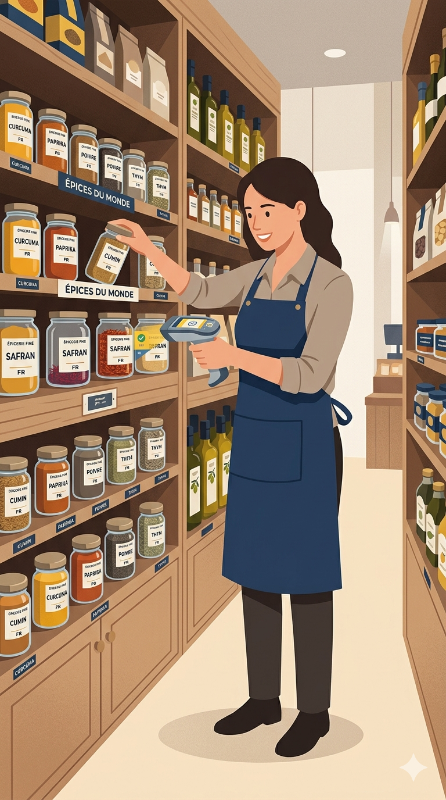

01
Invisible en ligne
Vous n'avez pas de site, ou un site qui ne vous représente plus : vos clients ne vous trouvent pas sur internet.
On gère votre environnement digital pour que vous puissiez vous concentrer sur l'essentiel : conseiller, vendre et faire grandir votre épicerie.
+50 épiciers nous font déjà confiance en France
Ces défis, on les connaît bien. On travaille avec des épiceries fines au quotidien pour simplifier leur gestion et leur faire gagner un temps précieux.
Vous n'avez pas de site, ou un site qui ne vous représente plus : vos clients ne vous trouvent pas sur internet.
Gestion des stocks, DLC, prises de commandes... Vous jonglez entre des outils coûteux qui ne communiquent pas entre eux.
Des saisies papier, des inventaires fastidieux, des processus répétitifs qui mériteraient vraiment d'être digitalisés.
Vous avez la sensation de ne pas exploiter pleinement les réseaux ou votre fichier client pour booster l'animation boutique.
De la création de site internet épicerie fine au logiciel sur mesure : un accompagnement complet pour la digitalisation des épiceries fines en France.
Présentation de vos services, de vos produits, e-commerce et click & collect… une présence en ligne élégante et à votre image, qui rassure vos clients et vous positionne comme une référence.
À partir de 500€Besoin d'un outil que personne n'a encore créé pour faciliter votre quotidien ? C'est le cœur de notre activité.
Web & mobileReliez vos outils entre eux, éliminez les double-saisies et récupérez du temps sur les tâches répétitives.
Gain de tempsLa première application de gestion des DLC pensée pour les épiceries fines, pour vous libérer de l'administratif et vous recentrer sur le conseil et la vente.
Avant de créer des solutions sur mesure pour nos clients, on les construit aussi pour le terrain. Cette application aide déjà plus de 50 épiceries fines à suivre leurs produits, anticiper les DLC approchantes, réduire les pertes et identifier plus vite les bonnes actions commerciales à lancer.

LaunchPad est une agence de création de solutions digitales sur mesure, spécialisée dans l'accompagnement des épiceries fines indépendantes. On ne fait pas du généraliste : on connaît vos contraintes, votre saisonnalité, vos clients, et le poids de votre quotidien opérationnel.
« Avant LaunchPad, je gérais mes DLC sur papier. Maintenant tout est dans l'app, je gagne facilement 1h par jour. »
« Un site qui me ressemble enfin, et un vrai accompagnement après la livraison. On sent qu'ils connaissent notre métier. »
Recevez gratuitement l'une de nos deux ressources pensées pour les épiceries fines. Des conseils concrets, sans jargon, à appliquer rapidement selon votre priorité du moment.
Un parcours simple, transparent, sans mauvaise surprise — du premier appel à la mise en ligne et au-delà.
30 minutes pour discuter de votre quotidien, comprendre vos besoins et explorer les solutions possibles. Sans pression, sans démarchage.
30 minutesUn devis clair, sans surprise, adapté à votre budget et à vos priorités. On détaille chaque ligne, vous décidez à tête reposée.
5 jours ouvrésVous êtes impliqué à chaque étape, pas juste au début et à la fin. Points réguliers, démos, ajustements : tout est transparent.
Suivi hebdomadaireOn ne disparaît pas une fois le projet livré. Maintenance, évolutions, conseils : on reste votre partenaire digital sur la durée.
Sur la duréePrenez 30 minutes pour en parler avec nous. C'est gratuit, sans engagement, et vous repartez avec des idées concrètes — même si on ne travaille pas ensemble.
→ Réserver mon appel découverteAucun démarchage. Juste une conversation entre professionnels.